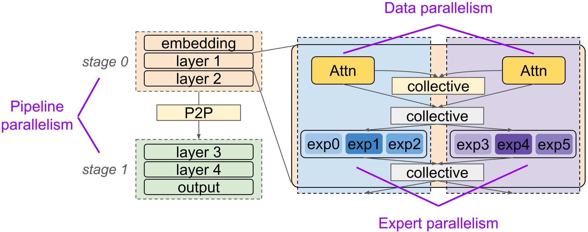
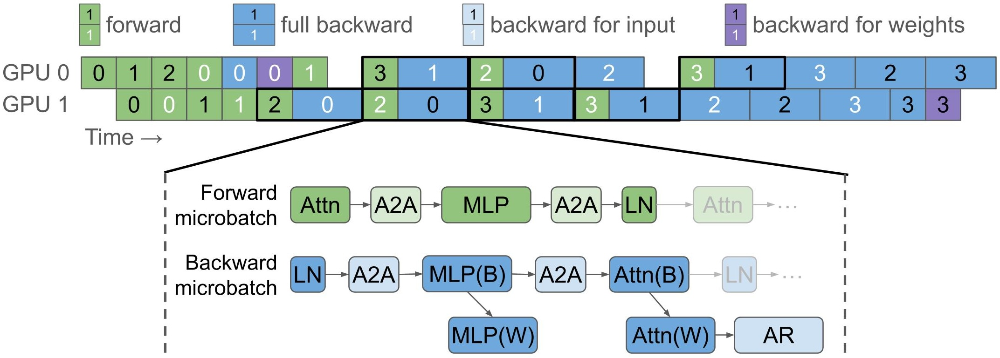
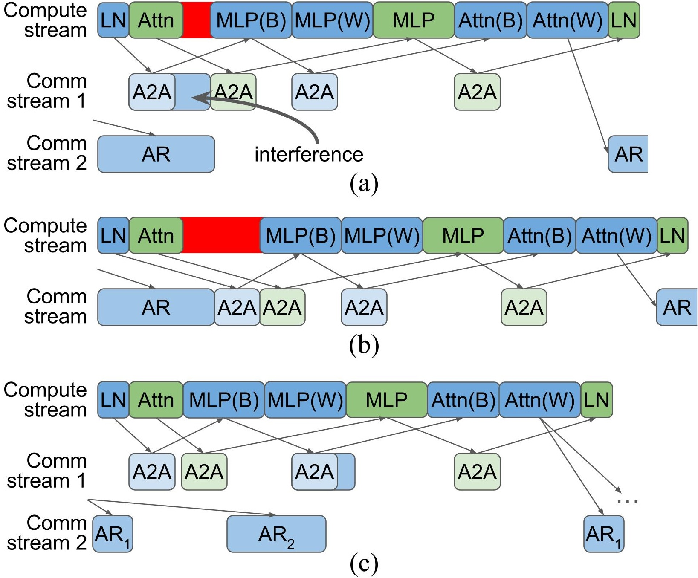
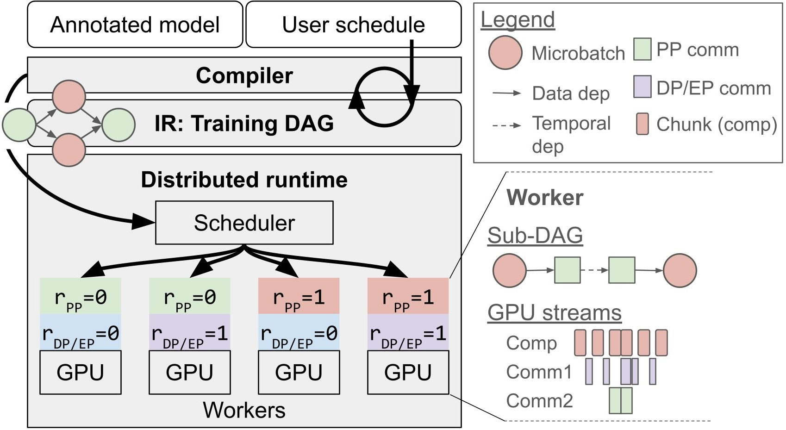
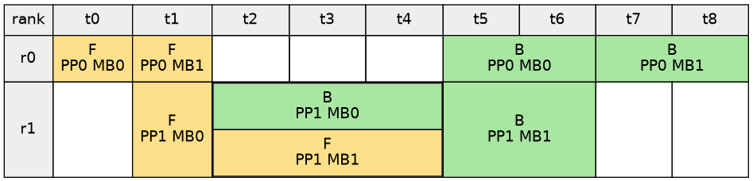
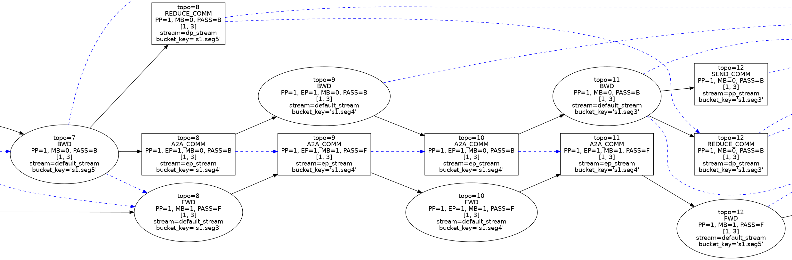
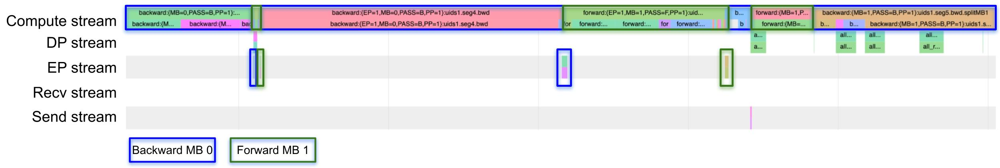
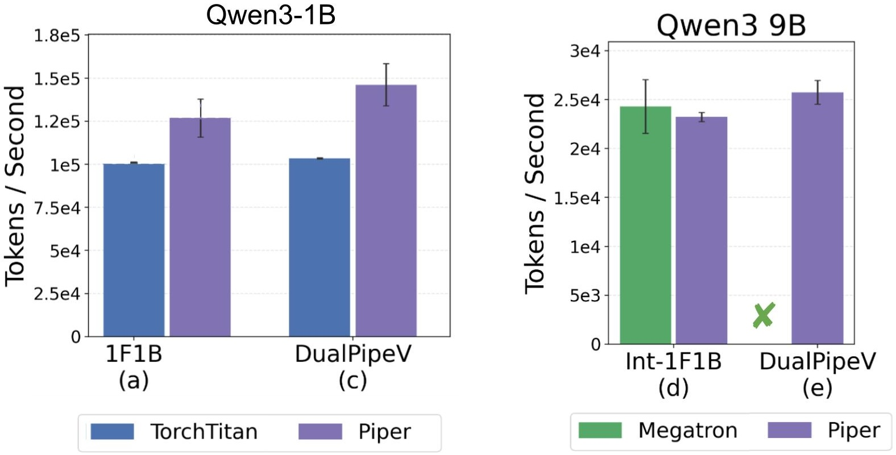
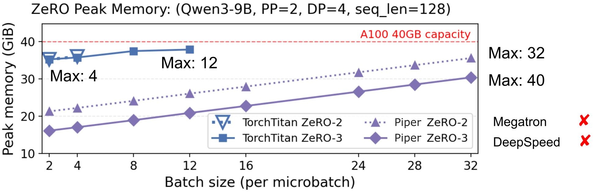

新的分布式训练策略和优化不应要求新的分布式运行时。大型训练作业越来越多地组合流水线、数据、专家并行与ZeRO式分片等策略，产生了当前框架无法干净表达的放置与GPU调度选择。
今天，研究者和工程师要么构建定制化的一次性系统（性能好但难以扩展），要么使用通用框架（易用但控制力有限）。Piper是一种用户可控的PyTorch分布式训练系统，把模型放置和GPU调度从模型代码与运行时实现中解耦。借助轻量级模型标注和一个小型调度语言，用户就能表达、可视化、剖析并运行诸如DualPipe式流水线与专家并行重叠这类高性能训练调度。
大模型训练通常组合多个并行维度：数据并行（DP） 复制模型状态，在每个副本上运行不同数据，并通过集合通信同步梯度。流水线并行（PP） 把层切分为阶段，用点对点通信在阶段间传递激活和梯度，数据批次被拆成微批次以保持流水线繁忙。专家并行（EP） 切分混合专家（MoE）层中的专家，并通过集合通信在专家子集间路由token。张量并行（TP） 切分单个张量算子（如矩阵乘法），用集合通信拼装部分结果。ZeRO式分片 跨DP秩削减冗余的优化器、梯度和参数状态，通过分片模型状态并引入额外的集合通信来收集和同步分片。
组合并行策略并非「一刀切」，正确选择取决于模型架构、内存约束和网络拓扑。Figure 1展示了一个MoE模型：跨层使用流水线并行，层内使用数据/专家并行。

组合多个维度会产生复杂的通信模式和较高的通信开销。对Figure 1的放置，单次训练步需要协调向前向后流经模型的PP微批次、关键路径上的EP token路由、以及DP梯度同步。因此最大化训练吞吐需要仔细调度每张GPU上的张量算子，以隐藏通信延迟、避免气泡（GPU空闲时间）。
MoE训练特别能说明对GPU调度细粒度控制的需求：EP在专家计算周围引入了关键路径上的全互联（A2A）集合通信。DeepSeek-V3报告在他们设置中，仅token路由就产生了约1:1的计算-通信比（专家分布在慢速机间链路上）。为隐藏该延迟，他们引入了DualPipe调度，将专家计算与来自不同流水线并行微批次的集合通信重叠。Figure 2展示了一种DualPipe调度变体，并用高亮标出重叠的前向-后向微批次对。

当DP与EP组合、在反向传播中加入集合全规约（AR）通信时，调度算子到GPU上并不简单。Figure 3展示了不同的GPU调度选择，其中流代表GPU上的并行度。最佳选择取决于内核运行时间、派发顺序和关键路径依赖。

把A2A和AR放在不同的流上（a）可让它们并发执行，但存在争抢网络带宽的风险；放在同一流上（b）通过串行化集合通信避免网络干扰，但可能延迟通信；把AR拆成更细粒度单元（c）可减少干扰（参数分桶是常见策略），但很难预测对训练吞吐的整体影响，因为拆分可能降低通信效率。
Megatron、DeepSpeed、TorchTitan等现有通用训练框架不暴露底层调度选择。例如TorchTitan把不同并行维度隔离实现，并在不同流上急切派发不同维度的通信算子，实践中只支持选项（a）。因此试验（b）或（c）这类选择往往需要侵入式运行时改动：因为当前框架缺乏一个灵活调度跨GPU和GPU内的通信/计算算子的中央抽象。
Piper的关键思想是把模型放置和调度选择从模型实现与运行时中解耦，建立抽象来暴露对设备间模型放置、流水线调度以及设备内调度的控制。
Piper有两个用户输入：一是带标注的PyTorch模型：标准模型代码，附轻量标签以标记可调度区域（如流水线阶段和MoE专家）；二是一段调度指令程序：告诉Piper编译器如何对可调度区域进行切分、复制、排序和重叠。
Piper编译器用TorchDynamo追踪模型，提取标注区域作为可调度模型组件，并在分布式训练中间表示（IR）上以图重写方式应用调度指令。该IR是一个全局训练DAG，显式编码计算、通信、数据依赖、时序依赖、设备放置和逻辑流分配。
Piper运行时随后把这个全局DAG分解为每个设备的执行计划，并在Ray worker上运行。每个worker管理局部CUDA流、通信器、模型状态缓冲和中间张量。

下面以PP x DP x EP放置加上协调的DualPipe式训练调度，走一遍在Piper中分布一个MoE模型的示例。按仓库安装说明准备后，可在仓库根目录用如下命令运行示例：
python examples/test_harness.py --test-file examples/test_qwen.py --base-schedule examples/base-schedules/pp2_dp2_ep2_custom_order.json --schedule custom --ranks 2 --mbs 4 --viz
Piper标注用于标识用户调度中要引用的模型区域。对PP x EP x DP放置，我们使用两个标签：`PP` 标识流水线阶段，`EP` 标识MoE层内的专家MLP。专家标注出现在AnnotatedMoE模块内。
PP_TAG = 'PP'
EP_TAG = 'EP'
class AnnotatedMoE(MoE):
def forward(self, x: torch.Tensor) -> torch.Tensor:
...
# 包裹专家计算
return piper.annotate(EP_TAG)(x)
这段代码用 `piper.annotate(EP_TAG)` 包裹专家计算，创建一个命名区域，调度可通过按EP标签过滤来匹配该区域。例如过滤器 `{'EP': 0}` 匹配模型中第一个EP区域，`{'EP': *}` 匹配所有EP区域，`{'EP': -}` 匹配所有非EP区域。
流水线标注出现在AnnotatedQwen3TransformerBlock模块内，把transformer层划分为num_stages个连续区间，每段用 `piper.annotate(PP_TAG)` 包裹。因此同一份模型代码可用不同PP度追踪，Piper会按数据流顺序自动分配阶段索引；每个标注区域成为一个可调度的流水线块。
这些标注是torch.fx追踪期间附加的元数据：Piper借助TorchDynamo提取带标注的PyTorch算子图作为fx.Graph，编译器再把图按标注区域分解为子图：这些是系统中最小的可调度单元。接下来我们看用户调度程序如何指示编译器切分、复制和重叠这些标注区域以构建高性能训练计划。
第二个用户输入是由指令组成的调度，指令告诉编译器如何切分、复制和重叠标注区域；每条指令内部编码一次对IR表示的DAG重写。下面是从小示例调度中抽取的指令片段，我们直接解析JSON来解释接口，实际中这些指令可由调度构建器生成。
首先用 `place` 指令设置流水线阶段：数据并行度为2时，阶段0运行在设备0和2，阶段1运行在设备1和3。
[
{"op": "place", "filter": {"PP": 0}, "devices": [0, 2], "stream": "pp_stream"},
{"op": "place", "filter": {"PP": 1}, "devices": [1, 3], "stream": "pp_stream"},
]
当编译器看到跨设备数据依赖（如前向中阶段0→1、反向中阶段1→0）时，会向IR DAG加入点对点send/recv通信节点，并关联到逻辑流pp_stream。逻辑流即GPU流：一个按序执行操作的工作队列。Piper用逻辑流标识「彼此应串行、但在依赖和硬件资源允许时可能与其他逻辑流上的操作重叠」的类操作。
其次用 `replicate` 指令告诉Piper同步每个流水线阶段两个副本之间的梯度：Piper在反向传播后加入集合通信节点来同步复制区域的梯度，并把它们关联到逻辑流dp_stream。
[
{"op": "replicate", "filter": {"PP": 0}, "devices": [0, 2], "reduce_stream": "dp_stream"},
{"op": "replicate", "filter": {"PP": 1}, "devices": [1, 3], "reduce_stream": "dp_stream"},
]
`replicate` 有几个可选参数：`bucket_size` 通过把参数装进bucket_size-MB的分组来控制通信粒度：更小的桶可能暴露更多重叠或减少干扰，但也可能降低通信效率。`shard_grads` 对复制区域施加ZeRO-1梯度分片。`shard_params` 施加ZeRO-2参数分片，这要求在前向/反向算前收集参数分片。`gather_stream` 允许指定用于参数分片相关收集集合通信的独立流，从而更细粒度地控制哪些集合通信被重叠或串行化。
再次用 `shard` 指令把每阶段内的MoE专家区域切分到该阶段的设备上，并在独立的流上路由专家通信：过滤器 `{'PP': 0, 'EP': '*'}` 匹配流水线阶段0内所有带专家标注的块，Piper为这些区域加入集合通信并关联到逻辑流ep_stream。
[
{"op": "shard", "filter": {"PP": 0, "EP": "*"}, "devices": [0, 2], "stream": "ep_stream"},
{"op": "shard", "filter": {"PP": 1, "EP": "*"}, "devices": [1, 3], "stream": "ep_stream"},
]
逻辑流是用户控制哪些类通信算子可重叠、哪些必须串行化的方式：用户不手动协调CUDA流，Piper把逻辑流映射到物理流，仅在数据或时序依赖要求时插入同步。通过通信分桶和流分配，用户可以试验Figure 3中那样的多种底层调度策略。
至此我们看到了place、replicate、shard指令如何描述计算和通信发生在哪里。对DualPipe式调度，还需要描述微批次数据如何流经流水线、以及它们如何重叠。
Piper用 `split` 和 `order` 指令暴露对流水线调度的控制。首先用 `split` 把每个训练步拆成独立调度的微批次：空过滤器匹配整个训练DAG，Piper将匹配的DAG复制num_microbatches次，并把副本标记为MB=0、MB=1等等。
{"op": "split", "filter": {}, "dim_name": "MB", "num_microbatches": 2}
`order` 加入时序依赖。Piper提供PASS标签，支持F（forward前向）、B（backward反向）、BI（backward for inputs输入反向）、BW（backward for weights权重反向）来指代训练DAG的不同部分：输入反向vs权重反向实现了ZeroBubble式反向分解。
[
{"op": "order", "filters": [
[{"PP": 0, "MB": 0, "PASS": "F"}],
[{"PP": 0, "MB": 1, "PASS": "F"}],
[{"PP": 0, "MB": 0, "PASS": "B"}],
...
]},
]
关键的双Pipe式构造是嵌套过滤器的出现：它告诉Piper可以交织多个子图以启用设备内重叠。例如阶段1的order指令中第二个过滤器元素表示微批次1前向和微批次0反向可以交织。
这给了用户对调度结构的控制，同时把机械的交织决策留给系统：用户说明哪些子DAG可以重叠，Piper决定如何在该可重叠区域内交织通信和计算。这由一个编译器pass实现，它为每个逻辑流决定一个全序：Piper在各流上对计算和通信算子排序，以促进重叠、避免气泡。
Piper提供多种可视化分布式训练调度的工具。第一种是排序指令的时间表示，类似于典型流水线调度可视化，可帮助从高层识别意外的流水线气泡（白框）。示例中的简单流水线调度输出如下可视化：

第二种工具是DAG IR可视化。应用调度指令并为每个逻辑流解析全序后，Piper生成每张GPU局部训练DAG的可视化，帮助识别算子将如何在GPU上重叠。

这是我们示例中PP rank 1（GPU 1和3）训练DAG的片段，展示微批次0反向与微批次1前向重叠。数据依赖用实线表示，时序依赖用虚线表示。
拓扑序（由topo=x标识）决定运行时派发顺序。Piper用时序依赖约束每个逻辑流的全序来强制重叠（例如ep_stream的通信都有唯一拓扑索引，dp_stream同理）。运行时的调度启发式通过「SEND > 其他节点 > RECV」的优先级排序，跨流消解模糊的拓扑排序，以避免点对点通信干扰。
最后一种可视化工具是自定义PyTorch profiler支持，把每个SPMD组内所有PP秩的profile合并，并标注与每个IR节点关联的GPU内核。Figure 7展示了示例中PP rank 1重叠前向-后向微批次的profiler轨迹：EP流上的all-to-all内核和DP流上的all-reduce内核都与计算完全重叠。

实际上我们不期望用户手写完整JSON调度：对于高PP度和多微批次的复杂流水线调度，JSON会很冗长。我们设想用户编写调度构建器：接受一些参数（如带模型放置指令的基础调度、PP度、微批次数量），输出带完整order指令的JSON。
调度构建器是输出Piper小型指令语言的普通Python函数。我们为1F1B、interleaved 1F1B、ZeroBubble和DualPipeV流水线调度提供了构建器。我们希望研究者实现新的调度构建器来尝试新的设备内外并行策略；流水线调度可视化器将帮助可视化调试。Piper也有安全护栏，要求order指令尊重模型的数据流和设备放置。
走一遍DualPipeV构建器的高层逻辑：n_ranks是物理PP秩数，n_mbs是微批次数量。对每个物理秩，构建器分配两个虚拟阶段，编码V型放置（每个秩从模型前端拥有一个阶段、从后端拥有一个阶段）。构建器把时间表示为一组槽位，每个槽位在调度允许重叠时可放两个操作；它遍历DualPipeV阶段：前向预热、填充第二个虚拟阶段、主重叠前向/反向对、冷却反向、拆分权重反向清理。返回前，`_order_directive_from_slots` 把槽位数组降到JSON order格式。
仓库中有一个更完整的DualPipe式调度示例。从Piper仓库根目录运行：
python examples/test_harness.py --test-file examples/test_qwen.py --base-schedule examples/base-schedules/pp4_dp2_ep2_v_placement.json --schedule dualpipev --ranks 2 --mbs 4
该命令从V放置基础调度出发，为2个流水线秩和4个微批次生成DualPipeV order指令，在该调度上运行Qwen模型，并把生成的调度、调度可视化、DAG可视化、吞吐/内存统计写入out/
我们把Piper与Megatron、DeepSpeed、TorchTitan对比，回答三个评估问题：① Piper在常用支持的策略上是否与现有系统表现相当？② 在策略灵活性和性能上，Piper提供哪些优势？③ Piper的可扩展性如何？下面重点展示覆盖问题 ② 的几个结果，完整评估见论文。
我们评估基线系统与Piper对DualPipe式调度的支持。TorchTitan是唯一支持全互联重叠的基线。在Qwen3 1B上，Piper-DualPipeV相比Piper-1F1B吞吐提升13%，而同样设置下TorchTitan-DualPipeV相比其1F1B仅提升3%。通过简短的源码探查，我们把TorchTitan较小的提升归因于前向/反向微批次派发线程之间的意外串行化。

在Qwen3 9B上，TorchTitan在所评估配置中内存溢出；Piper-DualPipeV相比Piper的interleaved 1F1B调度吞吐提升10%，相比Megatron的interleaved 1F1B提升6%。Megatron不支持DualPipeV，其interleaved调度是最接近的基线。除了重叠EP通信，我们还计划通过集成Megatron的优化内核进一步提升性能。
我们评估基线系统与Piper对流水线并行组合ZeRO分片策略的支持。回顾ZeRO内存优化：逐级的模型状态分片：ZeRO-1分片优化器状态，ZeRO-2额外分片梯度，ZeRO-3额外分片参数。ZeRO级别越高内存节省越好，但通信开销也越大，因为模型状态必须在正确时点物化和分片。
Megatron、DeepSpeed、TorchTitan都没有完全支持流水线并行组合ZeRO-2/3。TorchTitan提供有限支持：我们发现在所有微批次之间模型状态没有被重新分片，因此内存节省远小于预期。Figure 9展示了Piper通过正确编码ZeRO-2/3分片语义，支持大得多的批次规模。

参考：https://syfi.cs.washington.edu/blog/2026-06-05-piper/